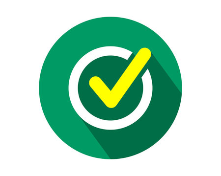

<!-- HTML code for the to-do list app -->
<div class="container">
  
  <h1>My To-Do List</h1>
<p>A simple app to keep track of your tasks.</p>
  <div id="newtask">
    <input type="text" placeholder="Enter a new task here..." list="tasks">
    <datalist id="tasks">
      <option value="Hit the gym">
        <option value="Pay bills">
        <option value="Meet with boss">
        <option value="Buy eggs">
        <option value="Read a book">
        <option value="Organize office">
    </datalist>
    <button id="push">Add</button>
  </div>
  <div id="tasks">
    <ul id="list"></ul>
  </div>


  <style>
    /* CSS code for the to-do list app */
* {
  box-sizing: border-box;
  margin: 0;
  padding: 0;
}

h1 {
  font-family: Arial, sans-serif;
  font-size: 36px;
  color: #f44336;
  text-align: center;
}

p {
  font-family: Arial, sans-serif;
  font-size: 18px;
  color: #333;
  text-align: center;
}

.container {
  width: 80%;
  max-width: 600px;
  margin: 50px auto;
}

#newtask {
  border: 2px solid #f44336;
  border-radius: 10px;
}

#newtask {
  display: flex;
}

#newtask input {
  flex: 1;
  padding: 10px;
  border: none;
  outline: none;
}

#newtask input {
  padding: 15px;
}

#newtask input {
  box-shadow: inset 2px 2px 5px rgba(0, 0, 0, 0.1);
}

#newtask button {
  padding: 15px;
}

#newtask button {
  box-shadow: 5px 5px 10px rgba(0, 0, 0, 0.3);
}

#newtask button {
  padding: 10px;
  background-color: #f44336;
  color: white;
  border: none;
}

#newtask button {
  cursor: pointer;
}


#newtask button:hover {
  background-color: #ff5722;
  transform: scale(1.1);
}

#tasks {
  margin-top: 20px;
}

#list {
  list-style-type: none;
}

#list li {
  box-shadow: inset 0 -5px 5px -5px #f44336;
  border: none;
}


#list li {
  position: relative;
  padding: 10px;
  background-color: #eee;
}

#list li:nth-child(odd) {
  background-color: #ffffff;
}

#list li.checked {
  background-color: #ffffff;
  color: white;
}

#list li.checked::before {
  content: "";
  position: absolute;
  left: -20px;
  top: -5px;
  border-color: white;
  border-style: solid;
  border-width: 0px 5px 5px 0px;
}

#list li {
  transition: transform 0.3s;
}

#list li:hover {
  transform: scale(1.1);
}

#list li {
  opacity: 0;
  transition: opacity 0.5s;
}

#list li.checked {
  opacity: 1;
}

.delete {
  position: absolute;
  right: -20px;
}
  </style>


  <script>
  // JavaScript code for the to-do list app

  var input = document.querySelector("#newtask input");
  var button = document.querySelector("#newtask button");
  var list = document.querySelector("#list");

  // Add a click event listener to the button
  button.addEventListener("click", function() {
    
 // Check if the input is not empty
 if (input.value.length > 0) {

   // Create a new list item element
   var li = document.createElement("li");

   // Set the text content of the list item to the input value
   li.textContent = input.value;

   // Create a delete button element
   var deleteButton = document.createElement("button");

   // Set the text content of the delete button to "X"
   deleteButton.textContent = "X";

   // Add a class name of "delete" to the delete button
   deleteButton.className = "delete";

   // Append the delete button to the list item
   li.appendChild(deleteButton);

   // Append the list item to the list
   list.appendChild(li);

   // Clear the input value
   input.value = "";

   // Add a click event listener to the list item
   li.addEventListener("click", function() {

     // Toggle the class name of "checked" on the list item
     li.classList.toggle("checked");
   });

   // Add a click event listener to the delete button
   deleteButton.addEventListener("click", function() {

     // Remove the list item from the list
     list.removeChild(li);
   });
 }
});

  </script>
</div>
